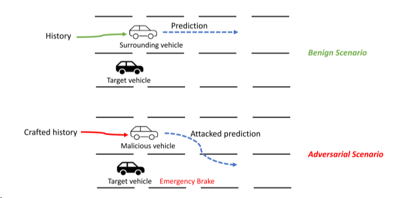
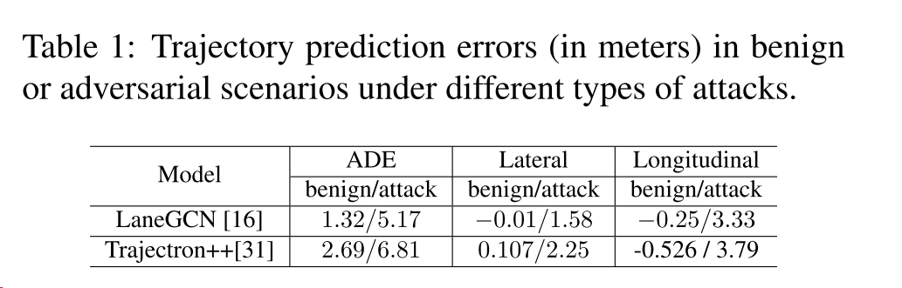
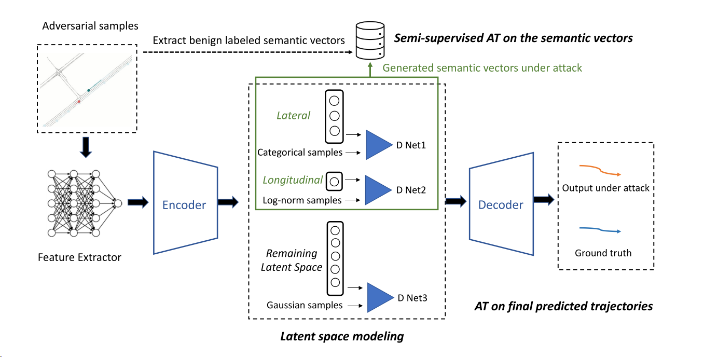
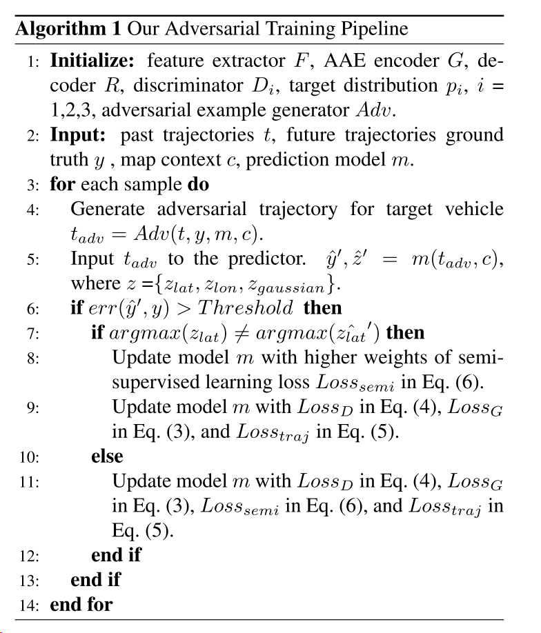
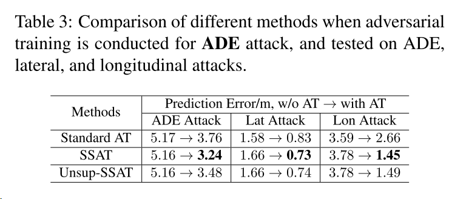
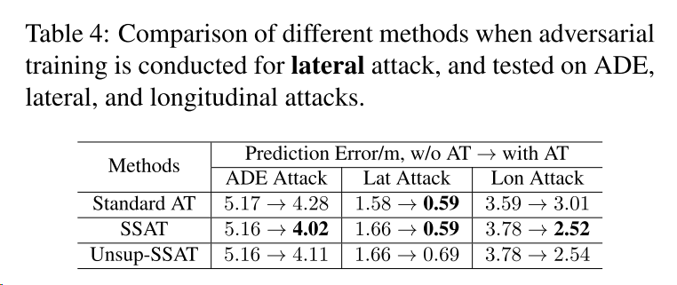
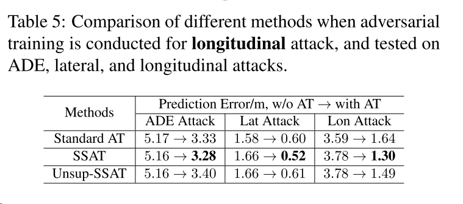

Semi-supervised Semantics-guided Adversarial Training for Robust Trajectory Prediction
0 摘要
预测周围物体的轨迹是自动驾驶汽车和许多其它自动驾驶系统的关键任务。最近的研究表明，对轨迹预测的对抗性攻击，即在历史轨迹上引入小的精心设计的扰动，可能会严重误导对未来轨迹的预测，并且导致不安全的规划。
在本文，对于轨迹预测提出了一个新的对抗训练的方法。
与经典的图像任务的对抗训练相比，我们的工作面临更多随机输入的挑战，这些输入有更多的上下文信息，但也缺乏类标签。我们提出了一种基于半监督对抗自动编码器的方法，该方法利用领域知识对分离的语义特征进行建模，并为对抗训练提供附加的潜在标签。
广泛的实验证明我们的SSAD方法可以有效减轻对抗攻击的影响，至多达到73%，比其他防御方法都好。实验表明，我们的方法可以显著提高鲁棒泛化性（robust generalization）。
1 结论
我们开发了一种新的AAE架构，利用解纠缠和语义特征来增强模型的鲁棒性和泛化能力。我们提出的SSAT方法显著优于文献中的一些基线，与原始预测模型相比，攻击下的预测误差减少了32%-73%。我们的方法也被证明是有效的防御看不见的攻击。
"解缠"指的是将特征空间中的不同因素分离开来，使得模型能够更好地理解和表示数据中的不同因素或属性。通过解缠，模型可以学习到对数据中的不同因素进行独立编码和处理的表示。
"语义特征"是指与数据的语义或含义相关的特征。这些特征可以捕捉到数据中的重要信息和模式，使得模型能够更好地理解和推理数据。
2 介绍
In particular, the adversarial robustness of DNNs has drawn significant attention in recent years.
为了去防御对抗性样本，对抗性训练通常用于增强模型的内在鲁棒性，并且被证明在各种防御策略中非常有效。另一方面，还有一些工作表明对抗训练可能对于看不见的攻击产生较差的鲁棒性泛化，并且证明了鲁棒性和准确性之间的权衡。
本文中，我们解决了轨迹预测这种关键任务，并且提出了一个新的架构，通过将语义特征和半监督对抗自动编码器引入对抗训练过程来增强其对抗鲁棒性和鲁棒泛化性。
我们专注于自动驾驶中的轨迹预测模块，自动驾驶通常由感知、定位、预测、规划和控制几个模块构成。近期，有很多工作，比如图神经网络和transformer应用于预测任务，并且取得很好的成功。
然而，有很少研究在车辆轨迹预测的对抗样本的鲁棒性。实际上，这很重要。
因为，1 自动驾驶本身是一项安全任务 2 最近的工作表明，如果周围的车辆沿着看似自然但是精心制作的轨迹行驶，则容易发生对抗性攻击 3当前的预测模型存在过拟合，遭受驾驶场景和行为的长尾分布。
威胁模型如图1，可能诱导危险的规划决策：

周围车辆是恶意的并且沿着精心制作的（历史）轨迹沿着，这可能误导目标车辆对周围车辆的未来轨迹进行错误的（攻击的）预测。在这种特定情况下，目标车辆错误地预测恶意车辆将切入其车道，从而采取不安全的紧急制动。
首先车辆轨迹预测是一个具有丰富上下文的时间序列回归问题，大多数现有的对抗性攻击和防御方法都针对分类任务。攻击模式更加随机，没有定义良好的类别标签，这意味着鲁棒性模型难以训练和推广。
第二，车辆可以传达语义和行为信息。因此，一些流行的防御模型比如TRADES和一些数据增强方法要么不适用要么在轨迹任务中性能较差。
在我们的工作中，我们首先提出了一个对抗训练管道，然后进一步用语义特征设计了一个半监督AAE架构，这个可以放到特征提取器之后，来提高对抗鲁棒性和泛化能力。
架构中所提到的方法，比如解纠缠、定义语义标签，可以进一步被应用到一般回归和生成问题的对抗训练。
贡献如下：
- 提出了一种新的对抗性训练方法来对抗对轨迹预测的对抗性攻击。
- 开发了一个半监督架构，它有着领域知识和语义特征，以提高对抗鲁棒性和在不同模式攻击下的泛化能力。
- 我们的方法有效的提高了对抗鲁棒性，优于流行的防御基线。
- 进一步探索，通过利用MixUp技术来平衡鲁棒性和正确性，并且还测试了轨迹预测鲁棒性的数据增强方法。
3 准备工作
3.1 对轨迹预测的对抗性攻击
最近的研究表明，自动驾驶中的轨迹预测可能会被周围车辆的对抗行为所愚弄，其中的对抗行为通过PGD（投影梯度下降法）来进行优化。这次研究是白盒攻击，我们假设攻击者可以达到最坏的情况，即，攻击者完全了解目标系统并试图最大化攻击影响。恶意代理只能改变自己的轨迹来间接误导目标车辆。
与图片分类不同，轨迹预测没有类别标签，但它具有上下文中的方向信息，例如：向前移动，转弯等。因此，攻击者除了随即攻击外还可以进行有针对的攻击，我们观察到它们会导致显著的方向性错误。有人已经提出了定向误差指标的目标攻击优化：
阿尔法表示时间帧id，p和s分别表示预测车辆位置和地面实况车辆位置的二维向量。R是产生特定方向的单位矢量的函数（横向和纵向），纵向近似由地面真值的路径点向量表示：
除了定向攻击外，还可以设计随即攻击使得平均位移误差最大化，这个误差是预测路径点和地面真实轨迹路径点之间的距离平方误差。
硬约束会被应用到路径点的最大误差计算之中，使得对抗历史轨迹在物理上可行，并且不会执行不切合实际的行为。
表1表明，这三种攻击都可以造成严重的轨迹偏离：

一般来说，0.3米的横向偏移足以侵入相邻车道。此外，最终位移误差大约比这里显示的平均误差大2到3倍。因此，攻击者可以进行随机攻击或者定向攻击。
还有人提出在条件变分编码器上利用平滑和对抗训练等方法来减轻这种对抗攻击的影响。然而它们并没有解决驾驶语义和鲁棒性泛化的问题。
3.2 对抗训练方法和鲁棒性泛化
对抗性训练被认为是提高DNN鲁棒性的最有效的方法之一。在实践中，PGD攻击常用于评估，因为它白盒攻击能力很强。在一些工作中，将对抗训练定义为一个最小最大问题。
最近的研究表明，对抗性训练只能防御特定的攻击，这限制了它的广泛应用，特别是轨迹检测任务，因为它具有长尾分布的特征。在这项工作中，我们证明了在隐式空间中，轨迹预测的鲁棒性泛化可以引入解纠缠和语义特征来增强。
长尾分布（Long-tail Distribution）是指在统计学和概率论中，随机变量的分布具有较大比例的极端值或稀有事件，而较常见的值则占据分布的尾部。好处是有多样性，坏处是数据稀疏，偏差和不公平性。在这里就是说，一些少量的操作模式得到了很大比例的操作，比如转弯刹车等操作占据了操作的很大一部分。
3.3 对抗式自动编码器结构
对抗自编码器(adverse autoencoder, AAE)是变分自编码器(variational autoencoder, VAE)的一种变体[14,13]，它提供了一种利用随机梯度下降联合学习深层潜变量模型和相应推理模型的有原则的方法。由于对抗学习的灵活性，AAE在潜在空间上施加复杂分布方面优于VAE。对于对抗鲁棒性，[27,41]的研究表明，解纠缠的潜在表征产生了对对抗攻击更鲁棒的VAEs。
我们的工作中，我们设计了一个基于aae的体系结构，它可以添加在预测模块的特征提取器之后。我们利用这个架构来模拟不同的语义特征，并增强潜在空间的解纠缠。
4 轨迹预测的对抗训练方法
4.1 领域知识引导的半监督体系结构
4.1.1 整体设计
由于轨迹预测没有类别标签，因此我们引入领域设计，以方便在良性和对抗的情况下促进语义信息的建模，基于的是AAE架构。该模型以半监督的学习方式学习方向语义潜在向量（directional semantic latent vector），因为基本事实仅适用于有限的场景，但他们的分布可以通过领域知识和统计数据得到。因此，模型包括两方面：无监督分布建模和标签可用时的半监督学习。
我们提出的模型如下图所示。

特征提取器[16]利用一维扩张卷积神经网络来获得时间序列轨迹的嵌入，并使用图形神经网络来建模车道上下文和对象之间的交互。编码器通过分布正则化（distribution regulariza-tion）和半监督训练将高维特征映射到语义引导的潜在空间。潜在空间被分成三个部分：纵向特征zlon，遵循一维对数正态分布，横向特征zlat，遵循三维分类分布和剩余特征，遵循高斯分布[12]。最后，解码器将语义向量沿着与其他解开的潜在向量映射到未来轨迹。请注意，我们开发了AAE而不是传统的VAE架构来建模这些不同且复杂的分布。
在攻击场景中，攻击的影响将被分解为不同的潜在向量，攻击模式将被显式地建模的语义特征。让我们以横向方向矢量为例。如果攻击不是针对横向维度，则编码器将攻击效果分解为其他向量，并且横向方向的映射将保持稳定。否则，如果攻击导致横向向量中的错误，则特征提取器和编码器将在方向的标签上进行对抗训练，并且从潜在分布到最终轨迹的对应映射也将被更新。
与已有的只对最终航迹路点进行对抗性训练的弹道预测方法相比，本文提出的方法是为了捕捉潜在空间中的语义特征，可以在多个方面有利于对抗性鲁棒性及其推广。
4.1.2 半监督语义特征建模
为了对轨迹预测任务中的高级语义信息进行建模，很自然地将轨迹分为两个维度：纵向和横向。我们希望利用领域知识来指导建模，提供代表性的指标和先验分布。除了语义特征之外，该架构还将高维信息映射到高斯分布的潜在向量中，以表示其他低级和更随机的特征。下面我们将主要解释语义特征建模。
在纵向上，速度和加速度通常用于对车辆动力学进行建模，但他们的值总是变化的，不包含足够的语义信息。在我们的模型中，我们应用时间间隔来有效提取纵向特征，该特征衡量了两辆连续车辆有一个相对稳定的行为模式和考虑到了其他车辆的相互作用。
也有工作使用时间间隔作为在特定场景中的攻击性度量，例如车道改变或者合并。在我们的模型中，该模型将时间间隔作潜空间（低维空间）中的一维变量。在良性和对抗性的情况下，编码者都会通过正则化损失来训练，迫使纵向特征在统计上遵循一定分布。
先前的工作表明，在城镇中时间间隔遵循对数正态分布，纵向特征遵循公式中的分布：
当被攻击目标和前车之间存在明显相互作用时，我们可以显示地获得半监督训练的真实时间间隔值。我们将半监督纵向编码特征看作一个回归问题，并通过最小化均方误差对其进行优化。对于横向特征，我们用三个简单的类别表示：向前移动 左转和右转，分类分布建模。在对抗训练过程中，只有在足够长的时间内具有明确意图的车辆才会被标记，我们利用交叉熵来优化这个分类任务。
对于所有的语义和高斯潜变量，这些被对抗生成损失正则化到一个目标分布（3）。分布鉴别器被训练用来最大化隐变量s和假隐变量的逆概率，均用log表示，公式如下（4）：
其中x是高维特征，m是不同类型的潜在向量的数量。G和D分别是编码器和分布鉴别器。
4.2 对抗训练过程
4.2.1 对抗训练算法
对于每一个样本，我们利用PGD攻击，只生成目标车辆的对抗轨迹，并保持周围其他车辆的原始轨迹。这限制了对抗性攻击对整个场景的影响。如果受到攻击的预测与地面事实之间的误差大于阈值，则我们认为攻击成功，并对此样本进行对抗训练。
由于扰动非常小，因此我们将真实的未来轨迹视为对抗训练的基础事实yi，并在等式中使用L1平滑损失优化整个流程。L1平滑损失如下。
为了进一步促进对抗训练，我们利用语义特征及其相应的标签。编码器被优化，使在潜空间中，用于最小化纵向特征上的均方误差和横向特征交叉熵最小。半监督损失函数如下：
其中z表示受到攻击时预测的语义向量，g表示良性场景下的ground truth。
由于横向方向预测可以被视为具有明确行为意义的分类问题，我们进一步将对抗训练过程与横向语义向量相适应。当对抗性实例导致横向行为分类错误时，我们将对抗性训练的半监督损失的权值设得更高。这样，我们的模型首先保证了高级语义预测的正确性，然后再对回归误差进行调优，从而避免了显著的对抗偏差，提高了泛化性能。
总体算法流程如下：

好多损失函数，要看不过来了~。
4.2.2 平衡精度和稳健性
在我们的初步实验中，我们注意到标准准确性和对抗鲁棒性之间的权衡。在分类任务中也观察到类似的现象[46,28]。有人提出了TRADES[46]、robust self - training[3]、MixUp[47,1]等方法来平衡这种权衡。然而，很少有方法可以应用于轨迹预测，因为这种时间序列回归问题没有类别标签，而且对增广数据引入的误差更敏感。在本研究中，我们利用MixUp[47]技术在对抗训练过程中混合对抗场景和良性场景。
实验表明，在轨迹预测中可以实现对抗鲁棒性和标准精度之间的平衡。
5 实验结果
5.1 实验设置
5.1.1 数据集
我们使用三个流行的基准- Argoverse 1 [4]， Argoverse 2[42]和ApolloScape数据集[9]来训练和评估不同的防御方法。这些数据集包含了25万多个不同城市的真实驾驶场景，比如迈阿密和匹兹堡。对于Argoverse 1和Argoverse 2，每个场景都包含一个路图和以10Hz频率采样的多个agent的轨迹。我们选择20个路径点作为历史轨迹，模型将预测未来30个路径点。
5.1.2 攻击设置
在实验中，我们研究了三种不同类型的攻击[48]对车辆轨迹预测算法的攻击——横向定向攻击(右移)、纵向定向攻击(向前移)和ADE攻击(随机偏离)。
车道预测模型分别针对三种攻击类型进行对抗训练。我们将被攻击轨迹和良性输入轨迹之间的最大偏差限制为1米。
5.1.3 训练设置
由于我们的体系结构是一个编码器-解码器模块，可以与不同的特征提取器结合，我们首先对良性数据进行了微调。在实验中，我们使用了基于注意力的图神经网络LaneGCN[16]的特征提取器。我们注意到AAE体系结构在良性数据上引入了轻微的精度下降，这主要是由于降维。对于对抗性训练，我们使用数据集中生成的对抗样本来训练预测模型。
5.2 实验结果和分析
在本节中，我们对不同攻击模式下的各种防御方法进行了实验，包括我们的半监督语义引导(SSAT)方法和将SSAT与MixUp技术相结合以平衡标准准确性和对抗鲁棒性的mix -SSAT方法。接下来，我们首先比较了各种防御方法的平均鲁棒性改进，展示了SSAT在各种攻击下提高鲁棒性的优势，以及mix -SSAT在平衡鲁棒性和准确性方面的有效性。然后，我们证明了SSAT可以显著增强对未知类型攻击的鲁棒泛化。此外，我们评估了ssat的无监督版本，以明确显示半监督语义引导的潜在空间建模如何能够提高对抗鲁棒性，这也作为消融研究。
5.2.1 SSAT方法的有效性
我们将我们的SSAT和mix - up-SSAT方法与原始模型以及5种不同的防御方法进行了比较，包括训练时间平滑[48]、测试时间平滑[48]、启发式数据增强[29]、数据驱动增强[29]和标准对抗训练(standard AT)。在此设置下，所有模型都使用相同的特征提取器LaneGCN。请注意，我们比较了两种数据增强方法，因为它们对于图像分类任务是有效的[6,29,35]。对于数据驱动的增强，我们设计了一个额外的解码器来增强输入轨迹，它可以通过在实际输入的潜向量上添加高斯噪声来产生更多的输入。对于启发式增广，我们简单地在相同的最大偏差约束下，对良性输入添加随机扰动。
表2显示了不同方法在不同攻击类型和良性情况下的预测误差(注意横向和纵向攻击时，我们测量横向和纵向误差)。可以看出，SSAT方法在提高轨迹预测的鲁棒性方面明显优于其他所有防御方法。与原模型相比，SSAT在不同攻击类型下的预测误差减小32% ~ 73%。
此外，虽然我们的SSAT方法提高了鲁棒性，但我们也观察到在良性情况下标准精度的下降。mix -SSAT可以在这两个目标之间进行有效的权衡(即，在良性情况下比SSAT更好的性能，但在受到攻击时性能更差)，通过设置敌对和良性例子之间的混合比例为不同的值(表2中的结果基于混合比例2)。
我们还注意到，数据驱动和启发式数据增强方法对原始模型的改进都非常有限。这可能是由于具有丰富上下文的回归任务的挑战.
5.2.2 SSAT对不同类型攻击的鲁棒泛化效果
我们观察到训练和测试在不同攻击类型下存在对抗鲁棒泛化差距。表3、表4、表5中的比较表明，与标准对抗训练相比，我们的SSAT方法更好地推广到看不见的攻击类型。
如表3所示，在随机ADE攻击下应用SSAT进行训练，在所有可见(即ADE)攻击类型和不可见(即横向和纵向)攻击类型上，其训练结果都优于其他模型，说明我们的SSAT方法能够有效地从随机ADE攻击中分解和学习语义特征。

表4和表5显示了类似的趋势，其中我们的SSAT方法在防御未知的攻击和减轻对特定攻击模式的过度拟合方面做得更好。图4进一步可视化了原始模型、标准对抗训练(standard AT)和SSAT三个表的结果。


5.2.3 潜在空间建模的影响
我们还进行了只对潜分布进行正则化而不对潜向量进行监督的对抗训练。我们称之为Unsup-SSAT。表3、表4、表5中的标准对抗训练(standard AT)与Unsup-SSAT的比较表明，即使没有标签，Unsup-SSAT中的部分解缠绕和分布建模也有利于对抗训练的轨迹预测，在大多数情况下优于基线标准AT。然而，与SSAT相比，我们发现半监督阶段的额外标签会进一步提高对抗鲁棒性(在实践中，我们经常可以访问这些标签)。
6 问题
6.1 LaneGCN是什么？发挥什么作用？
LaneGCN（Lane Graph Convolutional Network）是一种用于自动驾驶中车道感知的图卷积网络（Graph Convolutional Network）模型。
在自动驾驶中，车道感知是指识别和理解道路上的车道线和车道边界，以帮助车辆进行路径规划、车道保持和交通行为预测等任务。LaneGCN旨在通过利用车道线之间的空间关系和拓扑结构来提高车道感知的准确性和鲁棒性。
LaneGCN采用图卷积网络作为主要的模型结构，将车道线表示为图的节点，并利用车道线之间的连接关系构建图的边。通过在图上进行卷积操作，LaneGCN可以捕捉车道线之间的关联信息，从而更好地理解车道线的拓扑结构和空间分布。
LaneGCN的主要作用包括：
- 车道线特征学习：LaneGCN可以学习车道线的特征表示，提取有用的特征信息，例如车道线的形状、位置和方向等。
- 车道线关系建模：通过构建车道线之间的图结构，LaneGCN可以建模车道线之间的关系，捕捉车道线之间的空间关系和拓扑结构。
- 车道感知增强：利用LaneGCN提取的特征和关系信息，可以改善车道感知的准确性和鲁棒性。这对于自动驾驶系统的路径规划、车道保持和交通行为预测等任务非常重要。
通过LaneGCN模型，车辆可以更好地理解和感知道路上的车道线信息，从而提高自动驾驶系统的性能和安全性。
6.2 什么是潜空间、潜向量？通常用在什么场景下？有什么用？
潜空间（Latent Space）是指在机器学习和生成模型中的一个高维向量空间。每个点在潜空间中对应着一个潜在向量（Latent Vector）。潜空间通常具有较低的维度，而且在这个空间中，相似的潜在向量会生成相似的输出。
潜向量（Latent Vector）是指在潜空间中的一个向量，它作为输入被输入到生成模型中，用于生成对应的输出数据，如图像、文本或音频等。潜向量可以看作是生成模型的参数，通过对潜向量进行变换和解码，可以生成与之对应的数据样本。
潜空间和潜向量通常在以下场景下使用：
- 生成模型：潜空间和潜向量常用于生成模型，如生成对抗网络（GANs）和变分自编码器（VAEs）。通过在潜空间中对潜向量进行采样或插值，可以生成新的、具有多样性的数据样本。
- 特征表示学习：潜空间和潜向量可以作为学习到的特征表示。在某些情况下，通过将原始数据映射到潜空间中的潜向量，可以提取出数据的潜在结构和特征，用于后续的分类、聚类或其他机器学习任务。
- 数据压缩与降维：潜空间和潜向量可以用于数据的压缩和降维。通过将数据映射到潜空间中的低维潜向量，可以减少数据的维度，并且保留数据的主要特征和结构。
- 插值与操作：在潜空间中，可以进行潜向量之间的插值和操作，例如在两个潜向量之间进行线性插值，可以生成中间状态的样本。这种操作可以用于生成图像的跨样式转换、图像编辑和图像合成等任务。
6.3 为什么这篇文章一下子提出要用这么多损失函数？是怎么用的？一起相加还是怎么样？
在这篇文章中，作者使用了几个损失函数来进行训练和优化：
- Adversarial Loss（对抗损失）：该损失函数用于对抗性训练，以增强模型对于对抗攻击的鲁棒性。它通过引入对抗性样本来训练模型，使其对于带有小幅扰动的输入数据能够产生正确的预测。这个损失函数帮助模型学习抵御对抗攻击，并减少对抗样本对预测结果的干扰。
- Reconstruction Loss（重构损失）：在使用半监督对抗自编码器（Semi-supervised Adversarial Autoencoder，SSAT）的方法中，重构损失用于衡量重构样本与原始样本之间的差异。通过最小化重构损失，模型可以学习到数据的潜在表示并还原原始数据。这有助于模型学习到数据的语义特征，并提高对抗攻击的鲁棒性。
- Classification Loss（分类损失）：虽然文章中的任务是轨迹预测，而不是分类，但为了增强模型的鲁棒性和泛化能力，作者使用了半监督学习方法。在这种方法中，作者基于领域知识和语义特征对数据进行分类，为模型提供额外的潜在标签。分类损失用于训练模型的分类器，使其能够正确分类样本，进而提高模型对于对抗攻击的鲁棒性。
说实话这个问题还是不太懂。